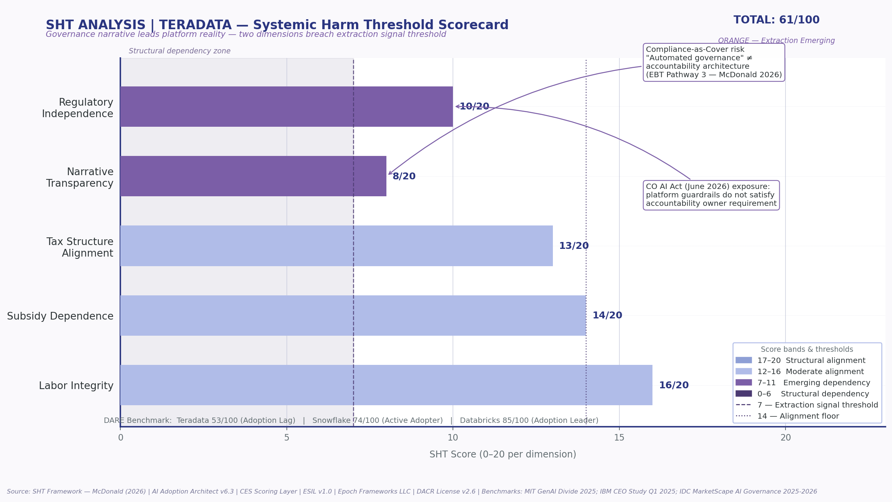

Automated governance is not the same as accountability architecture.
Teradata can provide platform controls, guardrails, evaluations, and compliance checks. The strategic gap is whether
the client has a named operations sponsor responsible for post deployment review, drift detection, and decision loop closure.
This page packages the repo into a shareable executive landing page for Domenic or any potential client evaluating
the difference between AI platform governance and defensible human accountability.
4
NIST AI RMF functions mapped
6
Framework layers in repo
1
Binding governance constraint
4 wk
Sprint path to client value
Diagnostic Compression
The DARE Diagnostic
DARE turns complex AI governance language into a practical executive question: where does the system produce clarity,
and where does it hide accountability?
D
Data
Tests whether insight is converted into governed action, not merely captured in dashboards or platform telemetry.
Signal to action
A
Agility
Tests whether legacy assumptions expire before they become governance risk in autonomous AI environments.
Criteria expiry
R
Risks
Tests whether compliance language is hiding a missing owner, stale criteria, or disruption deferral.
Compliance as cover
E
Evolution
Tests whether leadership is operating from future accountability requirements or prior cycle platform comfort.
Future fit
Define reality
Assess the gap
Reframe risk
Execute entry
The engagement begins where the platform stops.
Client Facing Translation
This is not a claim that Teradata lacks governance tooling. It is a sharper point: platform controls do not automatically
create post deployment accountability. That accountability requires a named operational owner and a repeatable review loop.
Use this phrasing to avoid sounding adversarial while still making the gap impossible to ignore.
Structural Risk Read
SHT Scorecard

FRED style SHT visualization showing transition between value creation and extraction emerging risk.
Core Finding
Platform governance exists. Ownership is the gap.
Public positioning supports Teradata's platform governance capability. It does not publicly confirm a required client side
operations sponsor embedded in the engagement model.
That distinction matters because the regulatory direction of travel requires named human accountability, not only automated controls.
Conversation Hook
Use this sentence
The gap I am seeing is not whether Teradata can govern models at the platform layer. The gap is whether the client has a named operations sponsor responsible for closing the post deployment accountability loop.
ESIL Evidence Delta
Claim, Signal, and Absence
ESIL separates what is claimed, what can be publicly verified, and what remains absent but strategically required.
Claimed
Platform governance, guardrails, evaluations, compliance checks
Verified
Governance tooling and autonomous AI positioning are present
Absent
Named client side operations sponsor requirement
| Claim |
Classification |
Confidence |
Implication |
| Teradata provides AI governance capabilities |
PUBLIC-VERIFIED |
High |
Platform controls are a credible baseline |
| No named operations sponsor disclosed |
ABSENCE OF PUBLIC EVIDENCE |
High |
Accountability architecture remains the gap |
| Competitors elevate governance as strategic risk |
PUBLIC-VERIFIED |
High |
Market pressure increases urgency |
| Operations sponsor is advisory entry point |
INFERRED-PUBLIC |
High |
Creates a focused paid sprint pathway |
Framework Stack
How the Analysis Is Structured
| Layer |
Role |
Client Value |
Repo File |
| ESIL |
External Signal Intelligence Layer |
Validates claims against regulatory, academic, and market signals |
esil-v1.md |
| MOC |
Mechanism of Constraint |
Identifies the binding bottleneck preventing adoption maturity |
moc-layer.md |
| CES |
Criteria Evaluation System |
Tests whether decision criteria remain valid under changing conditions |
ces-layer.md |
| SHT |
Systemic Harm Threshold |
Scores structural dependency and extraction emerging risk |
sht-scorecard.md |
| DARE |
Data, Agility, Risks, Evolution |
Turns complexity into an executive entry point |
dare-layer.md |
| EBT |
Evaluative Bias Transference |
Flags accountability laundering and compliance as cover |
Embedded analytic lens |
Repository Architecture
Operating Repo Structure
The repo is organized as an advisory system, not a loose collection of files. Each layer has a role in the client conversation.
domenic-terradata-meeting/
├── README.md
├── index.html
├── output/
│ ├── teradata-ai-governance-stress-test.md
│ ├── evidence-delta-block.md
│ └── priority-action-stack.md
├── visuals/
│ └── teradata_sht_fred_analysis.png
├── frameworks/
│ ├── dare-layer.md
│ ├── esil-v1.md
│ ├── sht-scorecard.md
│ ├── ces-layer.md
│ └── moc-layer.md
└── client-briefs/
└── domenic-teradata-executive-brief.md
Repository Artifacts
Client Ready Files
Executive Brief
Short client facing brief focused on governance accountability and the operations sponsor gap.
Open
Full Stress Test
Detailed Teradata AI governance stress test with DARE, ESIL, SHT, CES, and MOC layers.
Open
Evidence Delta Block
Claim, evidence, absence, and inference classification for the governance accountability finding.
Open
Priority Action Stack
Action pathway to convert the identified gap into a paid advisory sprint.
Open
DARE Layer
Framework file describing Data, Agility, Risks, and Evolution as an AI adoption diagnostic.
Open
Paid Sprint Path
4 Week Governance Accountability Sprint
Week 1
Map the existing governance loop
Inventory where AI governance controls exist, where review happens, and where accountability currently stops.
Week 2
Identify the operations sponsor gap
Define the missing owner, decision rights, review cadence, escalation paths, and drift accountability triggers.
Week 3
Build the accountability architecture
Translate governance language into a client side operating model with named roles and loop closure requirements.
Week 4
Deliver executive brief and action plan
Package findings into a board ready accountability brief, implementation roadmap, and next phase recommendations.
What Domenic gets
A sharper client conversation around governance ownership, not generic AI tooling.
What Teradata gets
A way to strengthen the last mile between platform controls and client side accountability.
What Epoch provides
A structured diagnostic layer that converts hidden risk into an actionable operating model.
Suggested Next Step
A focused 4 week paid sprint can map the current AI governance accountability loop, identify where platform controls stop,
define the operations sponsor role, and produce a board ready accountability architecture brief.
- Clarify accountability ownership
- Separate platform governance from human decision responsibility
- Design a repeatable post deployment review loop
- Create a reusable client advisory model